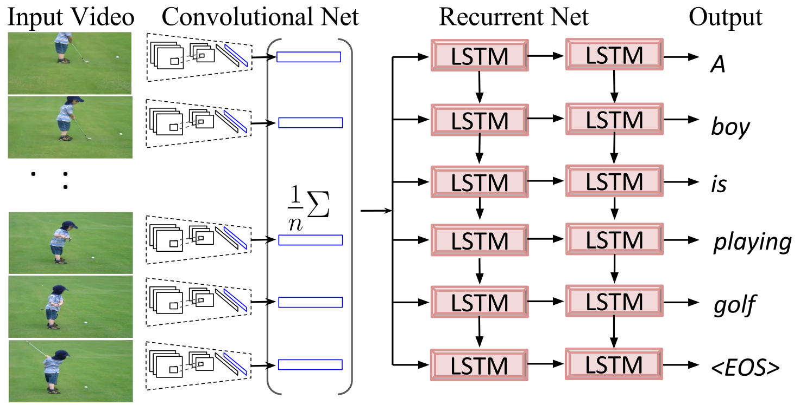

Abstract
Solving the visual symbol grounding problem has long been a
goal of artificial intelligence. The field appears to be
advancing closer to this goal with recent breakthroughs in deep
learning for natural language grounding in static images. In
this paper, we propose to translate videos directly to
sentences using a unified deep neural network with both
convolutional and recurrent structure. Described video datasets
are scarce, and most existing methods have been applied to toy
domains with a small vocabulary of possible words. By
transferring knowledge from 1.2M+ images with category labels
and 100,000+ images with captions, our method is able to create
sentence descriptions of open-domain videos with large
vocabularies. We compare our approach with recent work using
language generation metrics, subject, verb, and object
prediction accuracy, and a human evaluation.
PDF
Slides
Talk
Overview

An overview of the CNN-LSTM video to text translation model.
Examples
Sample Youtube clips with model output.
Code
The code to prepare data and train the model can be found in:
https://github.com/vsubhashini/caffe/tree/recurrent/examples/youtube
Model information: GitHub_Gist
Download pre-trained model: NAACL15_VGG_MEAN_POOL_MODEL
(220MB)
Pre-processed video data:
NAACL15_PRE-PROCESSED_DATA
Notes:
- Data
-
The pre-processed data contains VGG (16 layer) network's fc7 activations
mean pooled across frames of each video, and the sentence descriptions
accompanying all the videos. This data can be used directly with the
code to train a network.
- Caffe Compatibility
-
The models are currently supported by the
recurrent branch of the
Caffe fork
in my
repository or Jeff's
repository
but is not yet
compatible with the master branch of
Caffe.
- Performance
-
The METEOR score of this model is 27.7% on the Youtube (MSVD) video
test dataset.
(refer to Table 2 in the Sequence to Sequence - Video to Text
paper).
Reference
If you find this useful in your work please consider citing:
@inproceedings{venugopalan:naacl15,
title={Translating Videos to Natural Language Using Deep Recurrent Neural Networks},
author={Venugopalan, Subhashini and Xu, Huijuan and Donahue, Jeff and
Rohrbach, Marcus and Mooney, Raymond and Saenko, Kate},
booktitle={{NAACL} {HLT}},
year={2015}
}
Also consider citing
Long-term Recurrent Convolutional Networks for Visual Recognition and Description.